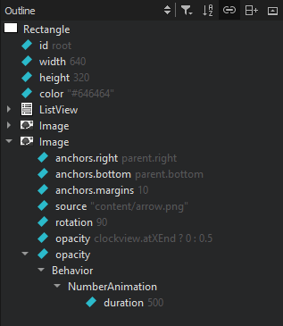
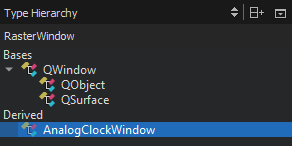

Browsing Project Contents
You can organize Qt Creator views in sidebars or as workspaces depending on the mode you are working in. Only views that are relevant to a mode are available in it.
The following views are related to managing projects and files:
- Projects shows a list of projects open in the current session and the project files needed by the build system.
- File System shows all files in the currently selected directory.
- Open Documents shows currently open files.
- Bookmarks shows all bookmarks for the current session.
- Git Branches shows the local and remote brances for the project in the Git version control system.
- Outline shows an overview of defined types and other symbols, as well as their properties and hierarchy in a source file.
The following views display additional information about C++ code:
- Class View shows the class hierarchy of the currently open projects.
- Tests lists autotests and Qt Quick tests in the project.
- Type Hierarchy shows the base classes of a class.
- Include Hierarchy shows which files are included in the current file and which files include the current file.
The additional options in a particular view are described in the following sections.
In some views, right-clicking opens a context menu that contains functions for managing the objects listed in the view.
Viewing Defined Types and Symbols
The Outline view shows an overview of defined types and other symbols, as well as their properties and hierarchy in a source file. You can move the code for types and symbols around in the source file by dragging and dropping them in the outline.

- To see a complete list of all bindings, select
 (Filter Tree) > Show All Bindings.
(Filter Tree) > Show All Bindings. - To sort types or symbols alphabetically, select (Sort Alphabetically).
- To stop the synchronization with the type or symbol selected in the editor, deselect
 (Synchronize with Editor).
(Synchronize with Editor).
Viewing the Class Hierarchy
The Class View shows the class hierarchy of the currently open projects.
To organize the view by subprojects, click (Show Subprojects).
To visit all parts of a namespace, double-click on the namespace item multiple times.
Viewing Type Hierarchy
To view the base classes and derived classes of a class, right-click the class in the code editor and select Open Type Hierarchy or press Ctrl+Shift+T.

To navigate in the type hierarchy, double-click a class or select it, and then select Open Type Hierarchy in the context menu. The previous class is highlighted in the view.
The definition of the selected class is opened in the code editor. You can also select Open in Editor in the context menu to open it.
Viewing Include Hierarchy
To view which files are included in the current file and which files include the current file, right-click in the editor and select Open Include Hierarchy or press Ctrl+Shift+I.
To keep the view synchronized with the file currently opened in the editor, select (Synchronize with Editor).